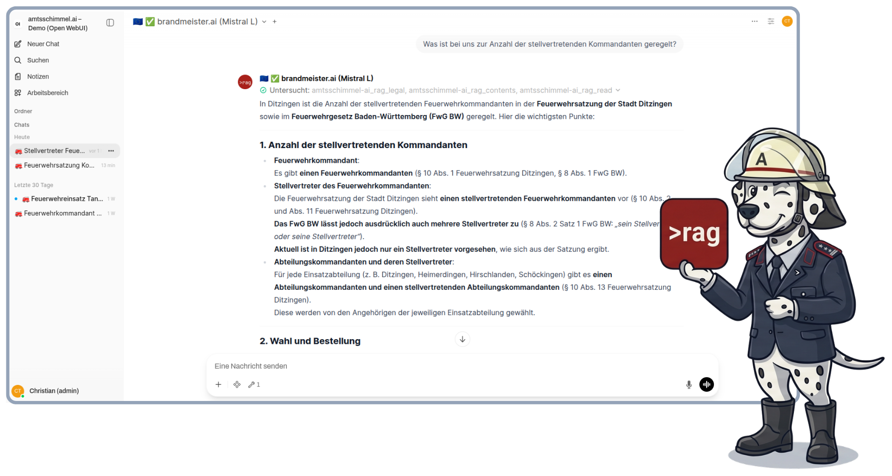
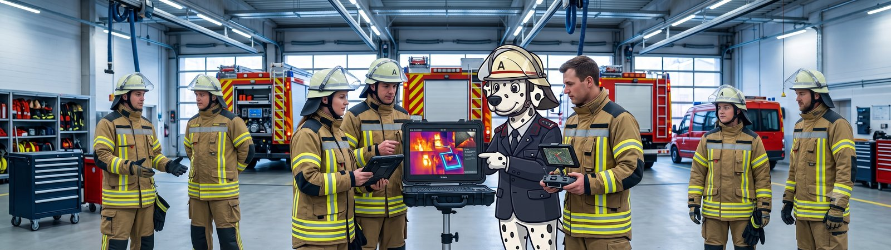
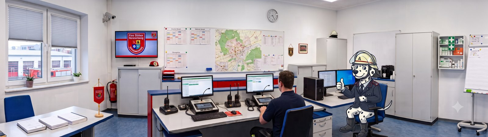
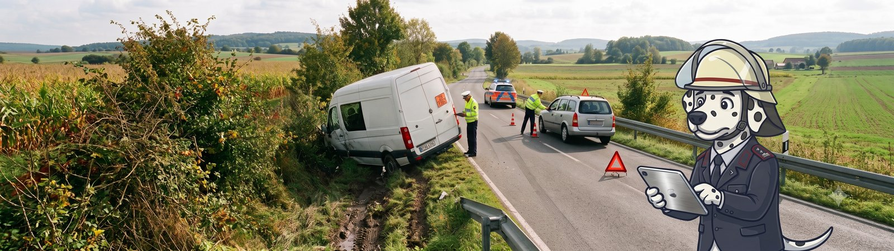
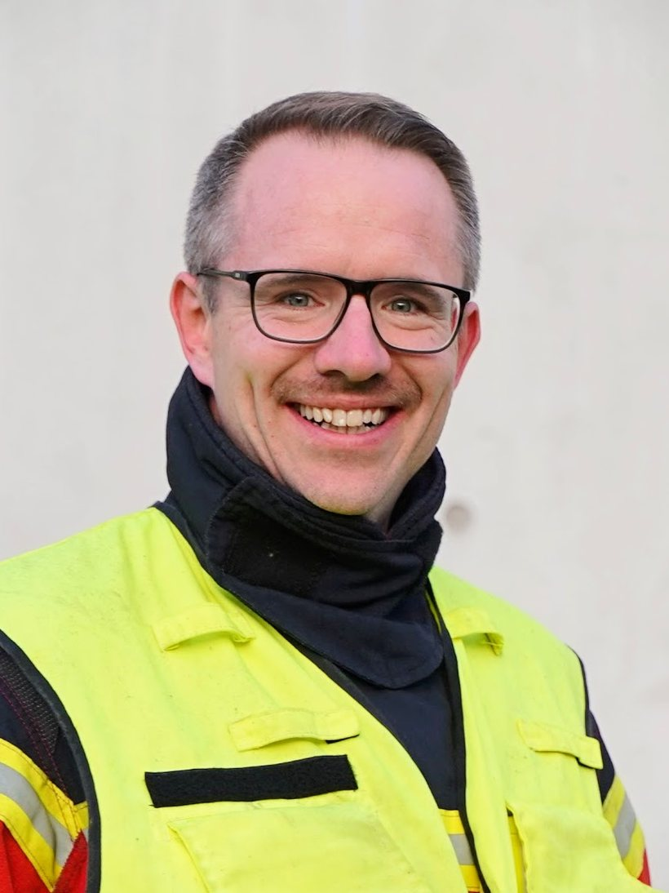

Eine moderne, offene und erweiterbare KI-Plattform, gebaut für den Feuerwehrdienst — europäisch, digital souverän, mit dem paragrafengenauen Retrieval von RAGSource. Von der Ausbildung über die Organisation bis zur Einsatznachbereitung.
In vielen Feuerwehren wird längst mit KI gearbeitet — Kameradinnen und Kameraden nutzen private Accounts für Übungsvorbereitung, Checklisten oder die Nachbereitung. Genau die vier Hürden dabei nehmen wir Ihnen ab.
KI, die halluziniert und veraltetes oder falsches Wissen ausgibt, ist im Einsatz- und Ausbildungsdienst nicht nur unbrauchbar, sondern riskant. brandmeister.ai lädt zu jeder Frage den exakten, aktuellen Wortlaut aus Feuerwehrgesetzen, Feuerwehrdienstvorschriften und Ihren lokalen Satzungen, mit Fundstelle. Wortlaut statt Wahrscheinlichkeit.
Einsatzberichte, Urkunden, Bescheinigungen, Dienstpläne und mehr enthalten personenbezogene Daten. Unsere Komplettlösung läuft ausschließlich auf Servern in der EU von Anbietern aus der EU — und erkennt personenbezogene Daten automatisch: Sensible Anfragen beantworten EU-Modelle. Bezüglich der Compliance mit DSGVO, EU AI Act und US CLOUD Act sind Sie mit uns auf der sicheren Seite.
Fehlt das offizielle Werkzeug, ist die Gefahr groß, dass private ChatGPT-Accounts genutzt werden — mit Einsatzberichten, ohne Vertrag und ohne Kontrolle. brandmeister.ai ist so vertraut und gut bedienbar, dass es genutzt wird — die beste Versicherung dagegen.
brandmeister.ai ist modular aufgebaut und setzt auf etablierte Open-Source-Software. Wir sind transparent im Tech-Stack und können uns nahtlos in Ihre bestehende Softwarewelt einfügen — auf Wunsch auch unter der Haube in Ihre bestehenden Softwarelösungen integriert. Kein Lock-in.

Den Unterschied macht nicht die Verpackung, sondern die Qualität der Antworten — und die entscheidet sich daran, dass der KI präzise das Wissen zur Verfügung steht, das sie für die Aufgabe braucht.
Allgemeine Assistenten antworten aus ihrem breiten Modellwissen, der Websuche oder dem, was Sie als Dokument angehängt haben — das bringt oft 80 %. Aber für die kritischen Punkte fehlen Nachvollziehbarkeit, Genauigkeit und Disziplin: Beim exakten, aktuellen Vorschriftentext aus Feuerwehrgesetz, Feuerwehrdienstvorschrift oder Ortssatzung stößt dieser Ansatz an seine Grenzen. Bei sicherheitsrelevanten Aufgaben ein echtes Risiko.
Über das paragrafengenaue Kontextmanagement von RAGSource kommt zu jeder Frage der originale, aktuelle Text in den Kontext — mit Fundstelle, von der FwDV über das Landes-Feuerwehrgesetz bis zur Ortssatzung. Dazu kuratierte Praxis-Skills für Einsatztaktik, Ausbildung und Gefahrenabwehr. Gebaut für Aufgaben in der Feuerwehr — Wortlaut statt Wahrscheinlichkeit.
Automatische Brandmeldeanlagen (BMA) lösen bundesweit weit überwiegend Fehlalarme aus — in Pflegeheimen und Kliniken gilt trotzdem: volle Anfahrtsordnung, keine Abkürzung wegen „vermutlich nur BMA".
Das FBF nach DIN 14661 zeigt am Feuerwehr-Anzeigetableau (FAT) die auslösende Meldergruppe. Zugang zum Objekt läuft über das Feuerwehrschlüsseldepot (FSD) — je nach Risikoklasse der DIN 14675 in drei Stufen:
| FSD-Klasse | Risiko | Beispiel |
|---|---|---|
| 1 | Niedrig — Einzelschlüssel, keine ÜE-Verbindung | Kleines Objekt |
| 2 | Mittel — mehrere Schlüssel, ÜE-Verbindung | Bürogebäude, Schule |
| 3 | Hoch — mit Generalschlüssel | Pflegeheim, Krankenhaus, Industrie |
Maßgeblich ist § 34 Abs. 1 S. 2 Nr. 6 FwG BW — Kostenersatz wird verlangt:
„vom Betreiber, wenn der Einsatz durch einen Alarm einer Brandmeldeanlage oder einer anderen technischen Anlage zur Erkennung von Bränden oder zur Warnung bei Bränden mit automatischer Übertragung des Alarms an eine ständig besetzte Stelle ausgelöst wurde, ohne dass ein Schadenfeuer vorlag." (§ 34 Abs. 1 S. 2 Nr. 6 FwG BW)
Die Gemeinde-Kostenersatzsatzung übernimmt diesen Tatbestand wortgleich (§ 3 Abs. 1 S. 2 Nr. 6) und legt die Sätze im Kostenersatzverzeichnis fest — beispielhaft:
| Position | Satz je Stunde |
|---|---|
| Feuerwehrangehörige (Personalkosten) | 26,00 € |
| Löschgruppenfahrzeug LF 16/12 | 198,00 € |
| Tanklöschfahrzeug TLF 16/25 | 172,00 € |
Wurde die Anlage vorsätzlich oder grob fahrlässig ausgelöst, greift zusätzlich § 34 Abs. 1 S. 2 Nr. 5 FwG BW (Alarmierung ohne Schadensereignis) — und strafrechtlich § 145 StGB (Missbrauch von Notrufen).
Kurz: Anfahrt immer nach Vollalarm-Ordnung, unabhängig vom Fehlalarm-Verdacht. Kostenpflichtig ist der Anlagenbetreiber, wenn kein Schadenfeuer vorlag — die genauen Sätze stehen im Kostenersatzverzeichnis der Gemeinde; bei unbilliger Härte kann nach § 34 Abs. 3 FwG BW auf den Ersatz verzichtet werden.
Die Rechtsgrundlage ist zweistufig: das Landes-Feuerwehrgesetz setzt den Rahmen, die Gemeinde-Feuerwehrsatzung konkretisiert und erweitert ihn.
Der ehrenamtliche Feuerwehrkommandant wird von den Angehörigen der Einsatzabteilungen für fünf Jahre in geheimer Wahl gewählt und nach Zustimmung des Gemeinderats vom Bürgermeister bestellt (§ 8 Abs. 2 FwG BW). Er kann vom Gemeinderat nach Anhörung des Feuerwehrausschusses abberufen werden.
§ 9 Abs. 1 FwG BW macht ihn verantwortlich für die Leistungsfähigkeit der Gemeindefeuerwehr. Er hat insbesondere:
| 1 | Alarm- und Ausrückeordnung aufstellen und fortschreiben |
| 2 | auf ordnungsgemäße feuerwehrtechnische Ausstattung hinwirken |
| 3 | für Aus- und Fortbildung der Angehörigen sorgen |
| 4 | für Instandhaltung von Ausrüstung und Einrichtungen sorgen |
Dazu kommt eine Beratungspflicht gegenüber Bürgermeister und Gemeinderat in allen feuerwehrtechnischen Angelegenheiten (§ 9 Abs. 2 FwG BW).
Die Gemeinde-Feuerwehrsatzung übernimmt diese vier Kernaufgaben wortgleich und ergänzt sie um vier weitere, gemeindespezifische Pflichten (§ 10 Abs. 9 Nr. 5–8): Zusammenarbeit der Einsatzabteilungen bei Übungen und Einsätzen regeln · Leiter von Altersabteilung, Jugendfeuerwehr, Kassenverwalter und Gerätewart überwachen · dem Bürgermeister über Dienstbesprechungen berichten · Beanstandungen der Löschwasserversorgung dem Bürgermeister mitteilen.
Dem Kommandanten stehen bis zu zwei Stellvertreter zur Seite; der 1. Stellvertreter vertritt ihn in Abwesenheit mit allen Rechten und Pflichten.
Kurz: Das Landesgesetz gibt vier Kernaufgaben plus Beratungspflicht vor — die Ortssatzung konkretisiert Wahl und Vertretung und erweitert die Aufgaben um vier gemeindespezifische Pflichten, insbesondere die Aufsicht über Jugendfeuerwehr, Altersabteilung und Kassenwesen.
Die Feuerwehr wurde mit dem Stichwort „H1-HiloPe" alarmiert. Die Feuerwehr musste davon ausgehen, dass sich die Person in einer Notlage befindet. Sie verschaffte sich Zugang und ermöglichte dem Rettungsdienst den Zugriff. Die Patientin wurde anschließend versorgt und in eine Klinik gebracht.
1. Wahrgenommene Aufgabe. Maßgeblich ist § 2 Abs. 1 Nr. 2 FwG BW:
„zur Rettung von Menschen und Tieren aus lebensbedrohlichen Lagen technische Hilfe zu leisten."
Es lag ein Pflichtaufgaben-Einsatz nach § 2 Abs. 1 FwG vor — die Rettung einer Person aus einer tatsächlich vorliegenden lebensbedrohlichen Lage, kein Einsatz nach § 2 Abs. 2 FwG.
2. Grundsatz: Unentgeltlichkeit. Für Pflichtaufgaben-Einsätze gilt nach § 34 Abs. 1 S. 1 FwG BW und § 3 Abs. 1 S. 1 Feuerwehr-Kostenersatz-Satzung: Einsätze nach § 2 Abs. 1 sind unentgeltlich. Der Einsatz ist also grundsätzlich kostenfrei.
3. Greift eine Ausnahme? § 3 Abs. 1 S. 2 der Kostenersatz-Satzung nennt abschließend folgende Tatbestände:
| Nr. | Tatbestand | Im Fall |
|---|---|---|
| 1 | Gefahr vorsätzlich/grob fahrlässig herbeigeführt | nein |
| 2 | Einsatz durch Fahrzeugbetrieb verursacht | nein |
| 3 | Sonderlöschmittel in Gewerbe-/Industriebetrieb | nein |
| 4 | Gefahrstoffe für gewerbliche/militärische Zwecke | nein |
| 5 | vorsätzl./grob fahrl. Alarmierung ohne Schadensereignis | nein |
| 6 | Fehlalarm einer Brandmeldeanlage | nein |
| 7 | automatischer Kfz-Notruf ohne Schadensereignis | nein |
Keiner der Tatbestände nach § 3 Abs. 1 S. 2 i.V.m. § 34 Abs. 1 FwG BW ist erfüllt.
Ergebnis: Keine Kostenersatzpflicht. Der Einsatz ist die echte Rettung einer Person aus lebensbedrohlicher Lage (Pflichtaufgabe nach § 2 Abs. 1 Nr. 2 FwG BW) und damit unentgeltlich — es gibt also auch niemanden, der zum Kostenersatz heranzuziehen wäre.
Sie bekommen damit dreierlei in einem: ein wertvolles Arbeitswerkzeug für Ihre Kameradinnen und Kameraden, eine KI-Plattform zum Einbinden in andere Softwarelösungen und interne Abläufe, und die Quellentiefe, die Sie mit herkömmlichen Ansätzen gar nicht oder nur mit sehr viel Aufwand erreichen würden — EU-souverän, in einem System.

brandmeister.ai ist das Schwesterprojekt von amtsschimmel.ai und wurde von Anfang an auf Compliance, Rechtssicherheit und Qualität für die öffentliche Verwaltung gebaut — davon profitieren Sie auch im Feuerwehrdienst.
Plattform und Ihre Daten laufen auf Servern in Deutschland. Die Modell-Verarbeitung findet in der EU statt; Drittlandtransfers werden vermieden und, wo unvermeidbar, per AVV und EU-Standardvertragsklauseln abgesichert.
Ihre Eingaben werden ausschließlich zur Beantwortung Ihrer Anfrage verarbeitet, nicht zum Training der Modelle — vertraglich mit den Modellbetreibern abgesichert. Dazu integrierte Löschfristen: Was ablaufen muss, löscht die Plattform automatisch.
Klare Zweckbestimmung als Assistenzwerkzeug, Transparenzhinweis nach EU AI Act, dokumentierte Schulung Ihrer Mannschaft — von uns vorbereitet, nicht Ihr Problem.
Einsatzberichte, Mitgliederlisten, Dienstpläne — im Feuerwehrdienst stecken überall personenbezogene Daten. Jede Anfrage wird deshalb automatisch geprüft: Enthält sie welche, antwortet ein führendes europäisches Modell in der EU — sonst das beste Modell für die Aufgabe. Ohne dass im Gerätehaus jemand daran denken muss.
Sorgen um die eigene Datenverarbeitung sind berechtigt und verdienen eine klare Antwort. Wehrführung und Ausschuss bekommen von uns fertige Vorlagen zur Information der Mannschaft — verständlich, rechtlich abgesichert, einsatzbereit für die nächste Dienstbesprechung oder Hauptversammlung.
Bausteine wie Open WebUI und Docker, gehostet bei Hetzner in Deutschland — modell-agnostisch, prüfbar, modular und anbieterunabhängig.

So sieht Ihre Instanz im Alltag aus: eine vertraute, aufgeräumte Oberfläche, die Ihre Mannschaft am ersten Tag bedient — und Antworten, die so schnell und flüssig kommen, wie man es privat gewohnt ist. Denn nur ein Werkzeug, das wirklich genutzt wird, gewinnt gegen die Schatten-IT.
Ausbildung, Organisation, Einsatz — die drei Felder, in denen brandmeister.ai Ihrer Wehr Arbeit abnimmt und Professionalität dazugibt. Sie starten klar umrissen und bauen aus, wenn es trägt.
Theorieabende, Stationsausbildung und Lernkontrollen direkt aus FwDV, Lehrunterlagen und aktuellen Quellen — ebenso für die Jugendfeuerwehr: Onboarding-Checklisten und Ausbildungsunterlagen. Bessere Qualität mit weniger Zeitaufwand.
Alarm- und Ausrückeordnung fortschreiben, satzungskonforme Tagesordnungen und Einladungen für Ausschuss und Hauptversammlung, Dienstpläne, Auswertungen und Berichte an die Gemeinde. Weniger Verwaltung, mehr Zeit für den Dienst.
Einsatzberichte sauber formulieren, Einsatzchecklisten, Rechercheunterstützung im Einsatz — inklusive integrierter Gefahrstoffdatenbank —, Kostenersatz direkt an Satzung und Feuerwehrgesetz prüfen. Die Erfahrung Ihrer Wehr, professionell dokumentiert.
Wissens- und Dokumentensysteme anbinden (Standard-Einsatzregeln, AAO, Objektpläne) — und unsere paragrafengenaue Rechtsquellen-Tiefe per API/MCP in Ihre eigene Infrastruktur holen.
Alles eingerichtet, gepflegt und begleitet. Sie arbeiten damit, wir halten es sauber.
Teil der amtsschimmel.ai-Familie: Nutzt Ihre Gemeinde bereits amtsschimmel.ai, bekommt Ihre Feuerwehr brandmeister.ai automatisch als eigene, getrennte Instanz dazu. Ohne Gemeinde-Anbindung ist brandmeister.ai auch separat für Ihre Feuerwehr buchbar — zu vergleichbaren Konditionen.

brandmeister.ai ist aus dem ehrenamtlichen Feuerwehrdienst entstanden — als Werkzeug für Kameradinnen und Kameraden, die mit KI rechtssicher arbeiten müssen und verlässliche Antworten brauchen. Nicht als Produkt auf der Suche nach einem Markt.
Dahinter steht RAGSource — ein Anbieter, der sich auf rechtssichere, skalierbare und modulare KI-Systeme spezialisiert hat: KI-Governance, KI-Readiness, Wissens- und Kontextmanagement. Gründer ist Christian Traub, Feuerwehrkommandant und Ingenieur mit über 15 Jahren Governance-, Compliance- und Audit-Erfahrung in KI- und Digitalisierungsprozessen. Kein Start-up, das fancy klingt — sondern Substanz, auf die Sie sich verlassen können.
Lernen Sie brandmeister.ai in einer kostenlosen Demo kennen — 30 Minuten, an Ihren eigenen Fragen, unverbindlich.
Lieber per E-Mail? kontakt@brandmeister.ai